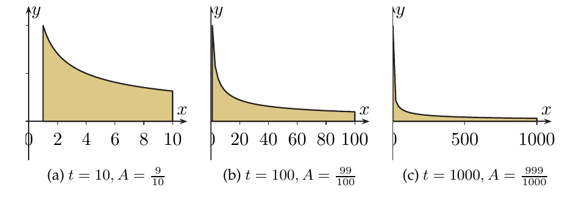
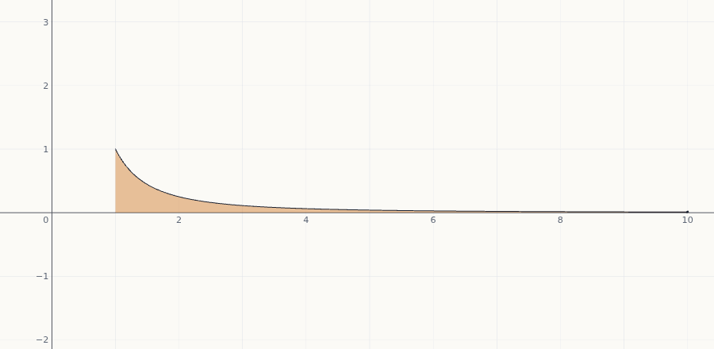
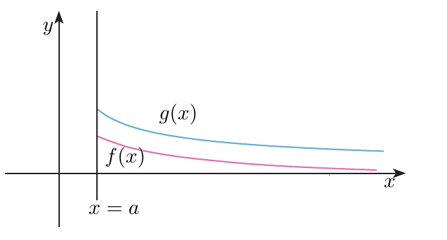

Integrales impropias
¿Puede una región que se extiende «hasta el infinito», o que se dispara hacia arriba junto a una asíntota, tener un área finita? A veces sí. Aprenderás a definir esas integrales con un límite, a decidir si convergen (con la integral de referencia $\frac1{x^p}$ y los criterios de comparación) y a reconocer enseguida de qué especie es cada una.
0Antes de empezar U p.271
La integral de Riemann está pensada para funciones acotadas en intervalos acotados. Si falla una de las dos cosas, no se puede aplicar la definición, pero sí se puede acercarse con un límite: calcular la integral hasta un extremo $M$ (o $c$) y ver si el resultado se estabiliza cuando $M\to\infty$ (o $c$ se acerca a la asíntota). Si se estabiliza, esa es el área; si crece sin tope o no se decide, la integral diverge.
U p.271Qué necesitas saber ya
- Regla de Barrow y primitivas (tema 6.2 y tema 6.3): casi todas las integrales de este tema se resuelven con una primitiva y un límite.
- Límites en el infinito y L'Hôpital ($\frac\infty\infty$ y $0\cdot\infty$; tema 2.3) y límites laterales (tema 1.4).
- Función acotada y asíntota vertical (tema 1.4): decidir la especie depende de ello.
- Series (tema 1.3): el criterio de comparación de las integrales impropias es el mismo que el de las series.
Mapa del Tema 6 completo (este es su último apartado)
| Apartado | Qué resuelve | Resumen |
|---|---|---|
| 6.1 Definición de la integral de Riemann | qué es el área bajo una gráfica (sumas de Riemann), qué funciones son integrables | tema 6.1 |
| 6.2 Teoremas fundamentales del Cálculo | integral y derivada son operaciones inversas; regla de Barrow | tema 6.2 |
| 6.3 Cálculo de integrales | primitivas: inmediatas, cambio de variable, partes, racionales, trigonométricas | tema 6.3 |
| 6.4 Integración numérica | aproximar cuando no hay primitiva: rectángulos, trapecio, Simpson, cotas de error | tema 6.4 |
| 6.5 Integrales impropias (estás aquí) | integrar en intervalos no acotados o con funciones no acotadas | este tema |
Mapa del tema
| Apartado | Qué contiene | Dónde está |
|---|---|---|
| 1 Por qué hacen falta | área finita bajo una región infinita; las dos causas | U pp.271-272 |
| 2 Primera especie | Def. 6.9; Ej. 6.36-6.40; $(-\infty,b]$, $\mathbb R$; condición necesaria | U pp.272-274 |
| 3 Segunda y tercera especie | Def. 6.10; asíntota interior; precaución; Ej. 6.41-6.42 | U pp.275-276 |
| 4 Ver cómo se estabiliza | interactivo: $\frac1{x^p}$, $c$ y $M$ | propio |
| 5 Convergencia por comparación | criterio, límite del cociente; Ej. 6.43-6.45; integrales de referencia | U pp.277-278 |
| 6 Ejercicios de E | E 6.42–6.48 | E pp.246-252 |
| 7 Ejemplos propios y tipos que pueden caer | 4 propios; 4 tipos de comparación; autoevaluación | propio, U p.282 |
| 8 Así lo preguntan en el examen | 6 problemas de X (+2 afines) | X |
| 9 Fuera de examen | §6.5.3 y E 6.49–6.51 (colapsado) | U pp.279-281 |
| 10 Chuleta y comprobación | receta, fórmulas, errores frecuentes, lista | — |
Qué se pide en los ejercicios y en el examen
- Clasificar una integral: ¿es impropia? ¿de primera, de segunda o de tercera especie? Hay que justificarlo con las dos comprobaciones (intervalo y función). Es lo que más sale en X.
- Calcular el valor con la definición: primitiva, Barrow en el intervalo recortado y límite.
- Decidir si converge sin calcularla, con las integrales de referencia $\frac1{x^p}$, $e^{-kx}$ y los criterios de comparación (U pp.277-278). En X no hay preguntas de este tipo, pero es materia de U y sale en E 6.47-6.48.
- Detectar el punto malo dentro del intervalo y no aplicar Barrow «a ciegas».
1Por qué hacen falta las integrales impropias U pp.271-272
Piensa en una pared que se va estrechando: cada metro de largo es más bajo que el anterior. Pintar «toda» la pared, que no se acaba nunca, ¿necesita infinita pintura? Depende de lo deprisa que se estreche. Si baja rápido (como $\frac1{x^2}$), la pintura total es finita; si baja despacio (como $\frac1x$), no alcanza ninguna cantidad. Lo mismo ocurre con una región muy alta pero muy estrecha, pegada a una asíntota vertical.
U lo resume así: hasta ahora se han integrado funciones acotadas sobre intervalos acotados, pero a menudo hace falta integrar sobre intervalos no acotados o funciones no acotadas U p.271. Eso da dos causas de «impropiedad», que se estudian siempre por separado:
| Causa | Ejemplo | Especie |
|---|---|---|
| un límite de integración es $\pm\infty$ (intervalo no acotado) | $\displaystyle\int_1^\infty\frac{dx}{x^2}$ | primera (Def. 6.9) |
| la función no está acotada en el intervalo (asíntota vertical) | $\displaystyle\int_0^1\frac{dx}{\sqrt x}$ | segunda (Def. 6.10) |
| las dos a la vez | $\displaystyle\int_0^\infty\ln x\,dx$ | tercera (se parte) |
Las definiciones exactas están en los apartados 2 y 3. U pp.272-275
Hasta $t$ el área es una integral ordinaria: $\displaystyle\int_1^t\frac{dx}{x^2}=\Big[-\frac1x\Big]_1^t=1-\frac1t$. Para $t=10,100,1000$ da $\frac9{10},\ \frac{99}{100},\ \frac{999}{1000}$: parece que tiende a $1$. Y, de hecho, $\displaystyle\lim_{t\to\infty}\Big(1-\frac1t\Big)=1$.

Pensar que una región infinita «tiene que» tener área infinita (o, al revés, que «impropia» significa «divergente»). Impropia solo indica cómo se define la integral (con un límite); después puede converger o no.
2Primera especie: intervalos no acotados U pp.272-274
No sabemos integrar «hasta el infinito», pero sí hasta un número $M$ tan grande como queramos. Calculamos $\int_a^M f$ y miramos hacia dónde va ese número cuando $M$ crece. Si se acerca a un número real, ese número es el área. Si se escapa a $\infty$ o baila sin decidirse, no hay área finita.
Si $f:[a,\infty)\to\mathbb R$ es una función continua y acotada, $$\int_a^\infty f(x)\,dx=\lim_{M\to\infty}\int_a^M f(x)\,dx.$$ Si el límite es un número real, la integral es convergente; en otro caso, divergente.
U p.272En $(-\infty,b]$: $\displaystyle\int_{-\infty}^b f=\lim_{M\to-\infty}\int_M^b f$. En todo $\mathbb R$ se parte en un número real $c$: $$\int_{-\infty}^{\infty}f=\int_{-\infty}^cf+\int_c^\infty f,$$ que «es convergente si ambas lo son y es divergente si alguna lo es».
U p.274Estudia, según $p$, si $\displaystyle\int_1^\infty\frac{dx}{x^p}$ converge.
- $p=1$ (Ej. 6.37): $\displaystyle\int_1^M\frac{dx}x=\ln M-\ln1=\ln M\to\infty$. Diverge. (Aunque $\frac1x\to0$, no baja lo bastante deprisa.)
- $p\ne1$: $\displaystyle\int_1^Mx^{-p}dx=\Big[\frac{x^{1-p}}{1-p}\Big]_1^M=\frac1{1-p}\big(M^{1-p}-1\big)$.
- Si $p<1$: $1-p>0$ y $M^{1-p}\to\infty$: diverge.
- Si $p>1$: $1-p<0$, $M^{1-p}=\frac1{M^{p-1}}\to0$ y el límite es $\frac{-1}{1-p}=\frac1{p-1}$: converge.
Conclusión (Ej. 6.38): $\displaystyle\int_1^\infty\frac{dx}{x^p}$ converge $\iff p>1$, y entonces vale $\dfrac1{p-1}$.
Intuitivamente: $\frac1{x^2}$ ($p=2$) baja deprisa y el área se estabiliza en $1$; $\frac1x$ baja demasiado despacio.
U p.273 S pp.520-523 L pp.569-574- $k=0$: $\int_0^M1\,dx=M\to\infty$: diverge.
- $k\ne0$: $\displaystyle\int_0^Me^{-kx}dx=\Big[-\frac1ke^{-kx}\Big]_0^M=\frac1k\big(1-e^{-kM}\big)$.
- $k>0$: $e^{-kM}\to0$: el límite es $\frac1k$. Converge y vale $\frac1k$.
- $k<0$: $e^{-kM}\to\infty$: diverge.
Es la segunda integral de referencia, junto a $\frac1{x^p}$.
U pp.273-274- Partir en $c=0$: hay dos problemas ($-\infty$ y $+\infty$), uno en cada trozo: $\int_{-\infty}^0+\int_0^\infty$.
- Trozo derecho: $\displaystyle\lim_{N\to\infty}\big(\operatorname{arctg}N-\operatorname{arctg}0\big)=\frac\pi2$.
- Trozo izquierdo: $\displaystyle\lim_{M\to-\infty}\big(\operatorname{arctg}0-\operatorname{arctg}M\big)=0-\Big(-\frac\pi2\Big)=\frac\pi2$.
- Los dos convergen, luego la integral converge y vale $\frac\pi2+\frac\pi2=\pi$.
Calcular $\displaystyle\lim_{M\to\infty}\int_{-M}^{M}f$ con un solo límite simétrico. Para $f(x)=x$ da $0$, pero $\int_0^\infty x\,dx$ diverge, así que $\int_{-\infty}^\infty x\,dx$ diverge según la definición. Cada extremo infinito lleva su propio límite, con letras distintas ($M$ y $N$), independientes.
Una condición necesaria para que converja $\int_a^{+\infty}f$ es que $\displaystyle\lim_{x\to\infty}f(x)=0$, siempre que ese límite exista. Es decir: si el límite existe y no es $0$, diverge. Si es $0$, no se sabe nada ($\frac1x\to0$ y diverge).
Ejemplo: en $\int_1^\infty\frac x{x+1}dx$ el integrando tiende a $1\ne0$, luego diverge. (Comprobación: $\int_1^M\big(1-\frac1{x+1}\big)dx=M-1-\ln\frac{M+1}2\to\infty$.)
U p.274Cambiar el extremo «bueno» no cambia el carácter: $\int_a^\infty f$ e $\int_{a'}^\infty f$ difieren en $\int_a^{a'}f$, que es una integral ordinaria (un número). Por eso $\int_2^\infty\frac{dx}{x^2}$ converge igual que $\int_1^\infty\frac{dx}{x^2}$.
propio3Segunda y tercera especie: funciones no acotadas U pp.275-276
Ahora el intervalo es acotado, pero la función se dispara a $\pm\infty$ junto a un punto (una asíntota vertical). No podemos integrar hasta el mismo punto, pero sí hasta una distancia $c$ de él, y mirar qué pasa cuando $c$ se acerca. Otra vez: si el resultado se estabiliza, es el área; si no, diverge.
Si $f:(a,b]\to\mathbb R$ es una función continua y no acotada, $$\int_a^bf(x)\,dx=\lim_{c\to a^+}\int_c^bf(x)\,dx.$$ Convergente si el límite es un número real; divergente en otro caso. Si la asíntota está en $b$ (función en $[a,b)$): $\displaystyle\int_a^bf=\lim_{c\to b^-}\int_a^cf$.
U pp.275-276Si $f$ tiene una asíntota vertical $x=c$ con $c\in[a,b]$ dentro del intervalo, la integral se divide en dos de segunda especie, $\int_a^c+\int_c^b$, y converge solo si convergen las dos U pp.274, 276. Si, además, un extremo es $\pm\infty$ y la función no está acotada, es de tercera especie: «la dividimos en la suma de una integral de cada especie» U p.275.
Estudia la convergencia de $\displaystyle\int_0^1\frac{dx}{x^p}$ según $p$.
- $p\le0$: $\frac1{x^p}=x^{-p}$ es continua en $[0,1]$: integral ordinaria, no es impropia.
- $p=1$: $\displaystyle\int_c^1\frac{dx}x=-\ln c\to+\infty$ cuando $c\to0^+$: diverge.
- $p>0$, $p\ne1$: $\displaystyle\int_c^1x^{-p}dx=\frac1{1-p}\big(1-c^{1-p}\big)$. Si $p<1$: $c^{1-p}\to0$ y el límite es $\frac1{1-p}$: converge. Si $p>1$: $c^{1-p}=\frac1{c^{p-1}}\to\infty$: diverge.
- Otra vía (U): con $t=\frac1x$, $\int_0^1\frac{dx}{x^p}=\int_1^\infty\frac{dt}{t^{2-p}}$, que converge $\iff2-p>1\iff p<1$ (Ej. 6.38): una de segunda especie se convierte en una de primera.
Conclusión: $\displaystyle\int_0^1\frac{dx}{x^p}$ converge $\iff p<1$, con valor $\frac1{1-p}$.
U p.275 L p.572En el infinito hace falta que $f$ baje deprisa ($p>1$); cerca de $0$ basta que suba despacio ($p<1$); $p=1$ ($\frac1x$) diverge en los dos sitios.
propio- Mirar la continuidad: $\frac1{x^2}$ no está definida en $x=0\in[-1,1]$ y $\displaystyle\lim_{x\to0}\frac1{x^2}=\infty$. Hay una asíntota dentro del intervalo.
- Partir en $0$: $\int_{-1}^1=\int_{-1}^0+\int_0^1$.
- Trozo derecho: $\displaystyle\lim_{c\to0^+}\Big[-\frac1x\Big]_c^1=\lim_{c\to0^+}\Big(-1+\frac1c\Big)=\infty$: diverge. (El izquierdo también; con uno que diverja ya basta.)
- Conclusión: diverge.
Si se aplicara Barrow «a ciegas» saldría $\big[-\frac1x\big]_{-1}^1=-1-1=-2$, un número negativo como área de una función positiva. Es falso porque $\frac1{x^2}$ no es continua en $[-1,1]$.
U p.276 S p.524 L p.572«Antes de resolver una integral definida hay que comprobar la continuidad del integrando. Si no lo hacemos así, podemos llegar a resultados falsos al haber aplicado el teorema fundamental sin cumplirse alguna hipótesis.» U p.276 Una asíntota interior es fácil de olvidar: busca ceros del denominador dentro de $[a,b]$ antes de aplicar Barrow.
Un punto donde $f$ no está definida pero tiene límite finito (como $\frac{\operatorname{sen}x}{x}$ en $0$) no es causa de impropiedad: $f$ sigue acotada cerca de él. Antes de decir «segunda especie», calcula el límite de $f$ en el punto sospechoso.
4Ver cómo se estabiliza (o no) el área propio
Prueba el interactivo con $\frac1{x^p}$: en primera especie sube $M$ hasta $1000$ y mira cuánto falta para el valor límite $\frac1{p-1}$ (con $p=2$ casi nada; con $p=1{,}2$ se queda lejos incluso con $M=1000$; con $p=1$ el área sigue creciendo sin parar, aunque despacio). En segunda especie baja $c$ hacia $0$: con $p<1$ el área se estabiliza; con $p\ge1$ la «pared» pegada al eje $y$ no deja de aportar área. La tercera opción es el ejercicio E 6.44: el área acumulada $F(M)=\int_0^M\cos(2\pi x)dx$ oscila.

5Convergencia y divergencia por comparación U pp.277-278
Muchas integrales no tienen primitiva elemental, pero basta saber si convergen. Es como comparar el contenido de dos depósitos: si el depósito grande es finito, el pequeño que cabe dentro también; si el pequeño ya es infinito, el grande también. Se compara con una integral que sí conocemos ($\frac1{x^p}$, $e^{-kx}$).
Sean $0\le f(x)\le g(x)$ continuas para $x\in[a,\infty)$.
- Si $\displaystyle\int_a^\infty g$ converge, entonces también converge $\displaystyle\int_a^\infty f$.
- Si $\displaystyle\int_a^\infty f$ diverge, entonces también diverge $\displaystyle\int_a^\infty g$.
Hace falta que $f$ y $g$ tomen valores mayores que $0$ (en otro caso, valor absoluto y otras definiciones). Para segunda especie hay un criterio equivalente: con $0\le f\le g$ en $(a,b]$, si $\int_a^bg$ converge, converge $\int_a^bf$; si $\int_a^bf$ diverge, diverge $\int_a^bg$.
U pp.277-278
Sean $f(x)\ge0$ y $g(x)>0$ continuas para $x\in[a,\infty)$ y $\displaystyle\lim_{x\to\infty}\frac{f(x)}{g(x)}=l$.
- (i) Si $l\in(0,\infty)$, $\int_a^\infty f$ y $\int_a^\infty g$ son ambas convergentes o ambas divergentes.
- (ii) Si $l=0$ y $\int_a^\infty g$ converge, también converge $\int_a^\infty f$.
- (iii) Si $l=\infty$ y $\int_a^\infty g$ diverge, también diverge $\int_a^\infty f$.
Para segunda especie con la asíntota en $a$, se cambia $\lim_{x\to\infty}$ por $\lim_{x\to a^+}$.
U p.278Integrales de referencia
| Integral | Converge si… (valor) | Diverge si… | Fuente |
|---|---|---|---|
| $\displaystyle\int_1^\infty\frac{dx}{x^p}$ | $p>1$ (vale $\frac1{p-1}$) | $p\le1$ | U Ej. 6.38, p.273 |
| $\displaystyle\int_0^1\frac{dx}{x^p}$ | $p<1$ (vale $\frac1{1-p}$) | $p\ge1$ | U Ej. 6.41, p.275 |
| $\displaystyle\int_0^\infty\frac{dx}{x^p}$ | nunca (siempre falla uno de los dos trozos) | todo $p$ | propio (Propio 4) |
| $\displaystyle\int_0^\infty e^{-kx}dx$ | $k>0$ (vale $\frac1k$) | $k\le0$ | U Ej. 6.39, pp.273-274 |
| $\displaystyle\int_{-\infty}^\infty\frac{dx}{1+x^2}$ | converge, vale $\pi$ | — | U Ej. 6.40, p.274 |
| $\displaystyle\int_0^1\ln x\,dx$ | converge, vale $-1$ | — | E 6.46, p.248 |
Cómo elegir $g$ propio
- En $\pm\infty$: quedarse con lo que crece más deprisa. En polinomios y raíces, la mayor potencia: $\sqrt{x^4+x^2+1}\approx x^2$, $\sqrt{x^3+1}\approx x^{3/2}$, $\frac{2x+1}{x^3-5}\approx\frac2{x^2}$ (para $x$ grande, en $[2,\infty)$, donde $f>0$). Se toma $g=\frac1{x^q}$ con esa potencia $q$ y el cociente $f/g$ tiende a un $l\in(0,\infty)$ (caso (i)).
- Exponenciales: $e^{-x}$ baja más deprisa que cualquier potencia, $\lim_{x\to\infty}x^ne^{-x}=0$ (L'Hôpital $n$ veces). Para $x^ne^{-x}$ o $e^{-x^2}$ se compara con $g=\frac1{x^2}$: límite $0$ y $\int_1^\infty\frac{dx}{x^2}$ converge (caso (ii)).
- Logaritmos: $\ln x$ crece más despacio que cualquier potencia: $\frac1{\ln x}$ es «más grande» que $\frac1x$ (límite $\infty$ con $g=\frac1x$: diverge); $\frac{\ln x}{x^2}$ es «más pequeña» que $\frac1{x^{3/2}}$ (límite $0$: converge).
- Cerca de $0^+$: quedarse con la menor potencia (manda cuando $x$ es pequeño): $x^3+x^2+x\approx x$. Equivalencias útiles (cada cociente tiende a $1$): $\operatorname{sen}x\approx x$, $e^x-1\approx x$, $\ln(1+x)\approx x$, $1-\cos x\approx\frac{x^2}2$.
- Si el criterio «no decide» (límite $0$ con $\int g$ divergente, o límite $\infty$ con $\int g$ convergente), se prueba con otra $g$ (E 6.47).
- Signo: los criterios piden $f\ge0$. Si $f\le0$ en todo el intervalo, se estudia $-f$. Si $f$ cambia de signo infinitas veces ($\operatorname{sen}x$, $\cos x$), no se pueden aplicar tal cual.
- Qué es: $f>0$ continua y acotada en $[1,\infty)$: primera especie. No hay primitiva sencilla: se compara.
- Desigualdad: quitar sumandos positivos al denominador hace la fracción mayor: $x^4+x^2+1\ge x^4\Rightarrow\sqrt{x^4+x^2+1}\ge x^2\Rightarrow f(x)\le\frac1{x^2}$.
- Referencia: $\int_1^\infty\frac{dx}{x^2}$ converge ($p=2>1$). Por comparación, converge. (Su valor, $\approx0{,}8429$, es menor que $1$.)
- Por qué es impropia: el denominador se anula en $x=0$ y $f\to\infty$ cuando $x\to0^+$: segunda especie.
- Desigualdad en $(0,1)$: $x^3+x^2+x\ge x^3\Rightarrow f(x)\le\frac1{\sqrt[4]{x^3}}=\frac1{x^{3/4}}$.
- Referencia: $\int_0^1\frac{dx}{x^{3/4}}$ converge ($p=\frac34<1$). Por comparación, converge ($\approx1{,}1882$, menor que $4$).
La mejor comparación sería con $\frac1{x^{1/4}}$ (cerca de $0$ domina el sumando $x$); pero basta una $g$ mayor cuya integral converja, aunque sea una cota «floja».
U p.278- Idea: para $x$ grande, $e^x+1\approx e^x$, luego $f\approx e^{-x}$. Se toma $f=\frac1{e^x+1}\ge0$, $g=e^{-x}>0$, continuas en $[0,\infty)$.
- Límite: $\displaystyle\lim_{x\to\infty}\frac fg=\lim_{x\to\infty}\frac{e^x}{e^x+1}=\lim_{x\to\infty}\frac1{1+e^{-x}}=1$.
- Caso (i) con $l=1\in(0,\infty)$: mismo carácter que $\int_0^\infty e^{-x}dx=1$, que converge. Converge.
- (Extra: valor.) $\frac{e^{-x}}{1+e^{-x}}=-\frac{(1+e^{-x})'}{1+e^{-x}}$, primitiva $-\ln(1+e^{-x})$: valor $0-(-\ln2)=\ln2\approx0{,}693$.
- Usar la desigualdad al revés: $f\ge g$ con $\int g$ convergente no dice nada.
- Con límite $l=0$, concluir «diverge» porque $\int g$ diverge: con $l=0$ solo se transmite la convergencia.
- Calcular el límite del cociente en el punto que no es el problemático ($x\to0$ en vez de $x\to\infty$, o al revés).
- Comparar con $\frac1{x^3}$ olvidando una raíz: $\frac1{\sqrt{x^3+1}}\le\frac1{x^3}$ solo se cumple en $[1;1{,}174]$ y es falso para $x$ grande (desde $x\approx1{,}17$).
Receta general del tema.
- Clasificar. (a) ¿Algún límite de integración es $\pm\infty$? $\Rightarrow$ primera especie. (b) ¿Se anula un denominador, hay $\ln$ en $0$…? Calcula el límite de $f$ allí: si es $\pm\infty$, $f$ no está acotada $\Rightarrow$ segunda especie. Las dos cosas $\Rightarrow$ tercera. Ninguna: integral ordinaria, Barrow directamente.
- Partir en los puntos problemáticos, de modo que cada trozo tenga un solo problema y en un extremo. La integral total converge solo si convergen todos los trozos.
- Si piden el valor: primitiva $F$, Barrow en el intervalo «recortado» y límite: $\lim_{M\to\infty}\big(F(M)-F(a)\big)$ o $\lim_{c\to a^+}\big(F(b)-F(c)\big)$. Real $\Rightarrow$ converge; $\pm\infty$ o no existe $\Rightarrow$ diverge.
- Si solo piden el carácter (o no hay primitiva): comprobar el signo y comparar con $\frac1{x^p}$ o $e^{-kx}$ (desigualdad o límite del cociente).
6Ejercicios del libro, resueltos E pp.246-252
Los siete ejercicios de E de esta sección (6.49–6.51 son de §6.5.3 y van fuera de examen), con su numeración y de fácil a difícil. Haz clic en cada uno (o en «Mostrar soluciones»).
Índice rápido: 6.42 · 6.43 · 6.44 · 6.45 · 6.46 · 6.47 · 6.48.
Ejercicio 6.42 · Función continua y acotada en $\mathbb R$: ¿qué impropias? E p.246
Si la función $f$ es una función continua y acotada en todo $\mathbb R$, ¿es posible hablar de integrales impropias de primera y segunda especie para ella?
- Qué me piden
- Decidir qué especies pueden aparecer con una $f$ continua y acotada en $\mathbb R$.
- Cómo lo pienso
- Cada especie tiene su causa: primera = intervalo no acotado; segunda = función no acotada.
- Qué uso
- Def. 6.9 (U p.272), extensiones (U p.274) y Def. 6.10 (U p.275).
- Por dónde empiezo
- Leer la Def. 6.10 y ver qué hipótesis tendría que fallar ($f$ no acotada) para que haya segunda especie.
- Primera especie: sí. El dominio es $\mathbb R$, así que tiene sentido $\int_a^\infty f$, $\int_{-\infty}^bf$ o $\int_{-\infty}^\infty f$, p. ej. $\int_{-\infty}^{-3}f$. (Que converjan depende de $f$: $\int_0^\infty\cos x\,dx$ diverge; $\int_0^\infty\frac{dx}{1+x^2}$ converge.)
- Segunda especie: no. La Def. 6.10 exige que $f$ no esté acotada. Como $f$ es acotada, en cualquier $[a,b]$ es continua y acotada: $\int_a^bf$ es ordinaria.
- Tercera: tampoco (necesitaría también $f$ no acotada).
Creer que «impropia» significa «divergente»: es una forma de definir la integral; luego puede converger o no.
Ejercicio 6.45 · ¿Está acotado el intervalo en la segunda especie? E p.248
¿En una integral impropia de segunda especie el intervalo de integración está acotado?
- Qué me piden
- Sí o no, razonado con la definición.
- Qué uso
- Def. 6.10 y margen sobre la tercera especie (U p.275).
- Por dónde empiezo
- Leer la Def. 6.10: ¿qué dice del dominio de $f$ y qué hipótesis falla?
- Sí. La Def. 6.10 se plantea para $f:(a,b]\to\mathbb R$ (o $[a,b)$) con $a,b$ números reales: el intervalo es acotado y lo que falla es que $f$ no está acotada.
- Si además un extremo fuese $\pm\infty$, sería de tercera especie (U margen p.275): se parte en una de primera y otra de segunda.
Llamar «de segunda especie» a $\int_0^\infty\ln x\,dx$: tiene las dos causas, es de tercera (autoevaluación de U, ítem 9; ver el apartado 7).
Ejercicio 6.43 · $\int_0^{+\infty}xe^{-x^2}dx$ por la definición E p.247
Utilizando la definición, calcula la integral impropia $\int_0^{+\infty}xe^{-x^2}dx$.
- Qué me piden
- El valor (o la divergencia) con el límite de la Def. 6.9.
- Cómo lo pienso
- $x$ es, salvo el factor $-2$, la derivada de $-x^2$: la primitiva es inmediata. La exponencial baja tan deprisa que el área total será finita.
- Qué uso
- Def. 6.9 (U p.272); tabla de inmediatas, fila $\int e^ff'=e^f$ (U p.248).
- Por dónde empiezo
- Comprobar que es de primera especie: $xe^{-x^2}$ es continua en $[0,\infty)$ y acotada (vale $0$ en $0$, tiende a $0$ en el infinito; máximo $\approx0{,}43$ en $x=\frac1{\sqrt2}$).
- Definición: $\int_0^{+\infty}xe^{-x^2}dx=\lim_{M\to+\infty}\int_0^Mxe^{-x^2}dx$.
- Primitiva: $\int xe^{-x^2}dx=-\frac12\int(-2x)e^{-x^2}dx=-\frac12e^{-x^2}$.
- Barrow en $[0,M]$: $\Big[-\frac12e^{-x^2}\Big]_0^M=-\frac12e^{-M^2}+\frac12$.
- Límite: $e^{-M^2}\to0$, luego el límite es $\frac12$.
- Conclusión: converge y vale $\frac12$.
Escribir «$F(\infty)$» sin el límite, o poner la primitiva $-2e^{-x^2}$ (multiplicar en lugar de dividir por $-2$).
Ejercicio 6.46 · $\int_0^1\ln x\,dx$ por la definición E pp.248-249
Utilizando la definición calcula la integral impropia $\int_0^1\ln x\,dx$.
- Qué me piden
- El valor por la definición de segunda especie.
- Cómo lo pienso
- $\ln x\to-\infty$ cuando $x\to0^+$: el «área» está bajo el eje y es una pared infinitamente profunda pero estrecha.
- Qué uso
- Def. 6.10 (U p.275); primitiva de $\ln x$ por partes (U Ej. 6.18, p.252); L'Hôpital para $0\cdot\infty$ (U pp.82-84).
- Por dónde empiezo
- $\ln x$ es continua en $(0,1]$ y $\lim_{x\to0^+}\ln x=-\infty$: segunda especie con el problema en $a=0$.
- Definición: $\int_0^1\ln x\,dx=\lim_{c\to0^+}\int_c^1\ln x\,dx$.
- Primitiva (partes, $u=\ln x$, $v'=1$): $\int\ln x\,dx=x\ln x-\int x\cdot\frac1x\,dx=x\ln x-x$.
- Barrow en $[c,1]$: $(1\cdot\ln1-1)-(c\ln c-c)=-1-c\ln c+c$.
- Límite delicado: $c\ln c$ es $0\cdot(-\infty)$. Se escribe $c\ln c=\frac{\ln c}{1/c}$ y L'Hôpital: $\lim_{c\to0^+}\frac{1/c}{-1/c^2}=\lim_{c\to0^+}(-c)=0$.
- Resultado: $\lim_{c\to0^+}(-1-c\ln c+c)=-1$. Converge y vale $-1$.
- Comprobación de sentido: $\ln x<0$ en $(0,1)$, el resultado debe ser negativo. ✓
Decir que $c\ln c\to0\cdot(-\infty)=-\infty$ (o $=0$) «porque sí»: es una indeterminación y hay que resolverla.
Ejercicio 6.44 · $\int_0^n\cos(2\pi x)dx\to0$, pero ¿converge la impropia? E pp.247-248
Para la sucesión de término general $a_n=\int_0^n\cos(2\pi x)\,dx$: 1. Comprueba que la sucesión converge a cero, es decir, $\lim_{n\to+\infty}\int_0^n\cos(2\pi x)\,dx=0$. 2. ¿Garantiza el apartado anterior que $\int_0^{+\infty}\cos(2\pi x)\,dx$ converge?
- Qué me piden
- Un límite de una sucesión y decidir si de él se deduce la convergencia de la impropia.
- Cómo lo pienso
- La Def. 6.9 pide el límite de la función $F(M)=\int_0^M\cos(2\pi x)dx$ cuando $M$ recorre todos los reales grandes, no solo los enteros. El coseno tiene periodo $1$: en cada periodo se compensan área positiva y negativa, pero entre dos enteros el área acumulada sube y baja.
- Qué uso
- Def. 6.9 (U p.272); límite en el infinito (U p.47); Prop. 2.3 (U p.85): si $\lim_{x\to\infty}F(x)=l$ entonces $\lim_{n\to\infty}F(n)=l$; el recíproco no es cierto.
- Por dónde empiezo
- La primitiva $\frac{\operatorname{sen}(2\pi x)}{2\pi}$.
- Apartado 1: $a_n=\Big[\frac{\operatorname{sen}(2\pi x)}{2\pi}\Big]_0^n=\frac{\operatorname{sen}(2\pi n)-\operatorname{sen}0}{2\pi}=0$ para todo $n$ (porque $2\pi n$ es múltiplo de $2\pi$). Una sucesión constante $0$ tiene límite $0$.
- Apartado 2, la función que importa: $F(M)=\frac{\operatorname{sen}(2\pi M)}{2\pi}$.
- Probar con valores no enteros: $M=k+\frac14$: $F=\frac{\operatorname{sen}(2\pi k+\frac\pi2)}{2\pi}=\frac1{2\pi}\approx0{,}159$. Con $M=k+\frac34$: $F=-\frac1{2\pi}$. Con $M=k$: $F=0$.
- No hay límite: si $F(M)$ tendiera a un número $L$, para $M$ suficientemente grande (entero o no) estaría tan cerca de $L$ como se quiera. Pero hay valores de $M$ tan grandes como se quiera con $F(M)=0$ y otros con $F(M)=\frac1{2\pi}$: $L$ no puede estar cerca de los dos. $F(M)$ oscila entre $-\frac1{2\pi}$ y $\frac1{2\pi}$ (puedes verlo en la tercera opción del interactivo).
- Conclusión: $\int_0^{+\infty}\cos(2\pi x)dx$ diverge («diverge» incluye «el límite no existe»). El apartado 1 no lo garantiza: los enteros son «momentos de suerte» en los que el área acumulada vuelve a $0$.
- Condición necesaria (U p.274): aquí $\lim_{x\to\infty}\cos(2\pi x)$ no existe, así que no se puede aplicar; hay que ir a la definición.
Calcular solo $\lim_{n\to\infty}F(n)$ con $n$ natural y concluir que converge.
Ejercicio 6.47 · Comparación por límite: $\int_1^\infty\frac{dx}{\ln(x+1)}$ y $\int_1^\infty e^{-x^2}dx$ E pp.249-250
Utiliza el criterio de comparación mediante límites (y la pista al margen) para estudiar si son convergentes o divergentes $\int_1^{+\infty}\frac1{\ln(x+1)}dx$ y $\int_1^{+\infty}e^{-x^2}dx$. (Pista: para cualquier $a>0$, $\int_a^{+\infty}\frac{dx}x$ diverge y $\int_a^{+\infty}\frac{dx}{x^2}$ converge.)
- Qué me piden
- El carácter de dos integrales sin primitiva elemental, con el límite del cociente.
- Cómo lo pienso
- $\ln(x+1)$ crece más despacio que $x$: $\frac1{\ln(x+1)}$ baja más despacio que $\frac1x$ (que ya diverge) $\Rightarrow$ diverge. $e^{-x^2}$ baja muchísimo más deprisa que $\frac1{x^2}$ $\Rightarrow$ converge.
- Qué uso
- Comparación mediante límite, casos (ii) y (iii) (U p.278); L'Hôpital (U p.82); Ej. 6.38.
- Por dónde empiezo
- Comprobar hipótesis: en $[1,\infty)$ ambas son continuas y positivas ($\ln(x+1)\ge\ln2>0$), y $g=\frac1x$, $g=\frac1{x^2}$ son $>0$.
- Primera, $g=\frac1x$: $\lim_{x\to\infty}\frac{1/\ln(x+1)}{1/x}=\lim_{x\to\infty}\frac{x}{\ln(x+1)}$, tipo $\frac\infty\infty$. L'Hôpital: $\lim_{x\to\infty}\frac1{1/(x+1)}=\lim_{x\to\infty}(x+1)=+\infty$.
- Caso (iii): $l=\infty$ y $\int_1^\infty\frac{dx}x$ diverge $\Rightarrow$ $\int_1^{+\infty}\frac{dx}{\ln(x+1)}$ diverge. (Alternativa: $\ln(1+x)\le x$ para $x>0$, luego $\frac1{\ln(x+1)}\ge\frac1x$ y la de abajo ya diverge.)
- Segunda, primer intento con $g=\frac1x$: $\lim_{x\to\infty}\frac{e^{-x^2}}{1/x}=\lim_{x\to\infty}\frac{x}{e^{x^2}}=\lim_{x\to\infty}\frac1{2xe^{x^2}}=0$. Pero $l=0$ con $\int g$ divergente no es ninguno de los tres casos: el criterio no decide.
- Segundo intento, $g=\frac1{x^2}$: $\lim_{x\to\infty}\frac{x^2}{e^{x^2}}=\lim_{x\to\infty}\frac{2x}{2xe^{x^2}}=\lim_{x\to\infty}\frac1{e^{x^2}}=0$.
- Caso (ii): $l=0$ y $\int_1^\infty\frac{dx}{x^2}$ converge $\Rightarrow$ $\int_1^{+\infty}e^{-x^2}dx$ converge (vale $\approx0{,}1394$, sin primitiva elemental).
Concluir «diverge» en el paso 3 porque $\int\frac{dx}x$ diverge: con $l=0$ solo se transmite la convergencia.
Ejercicio 6.48 · La función Gamma: convergencia, $\Gamma(p+1)=p\Gamma(p)$ y $\Gamma(n+1)=n!$ E pp.250-252
Demuestra que para $p>0$ la siguiente integral impropia converge: $\Gamma(p)=\int_0^{+\infty}e^{-x}x^{p-1}dx$. Probar que para cada $p>0$ se tiene $\Gamma(p+1)=p\Gamma(p)$. Probar que $\Gamma(1)=1$ y deducir que para todo $n\in\mathbb N$ se tiene $\Gamma(n+1)=n!$.
- Qué me piden
- (a) Convergencia para todo $p>0$; (b) la fórmula $\Gamma(p+1)=p\Gamma(p)$; (c) $\Gamma(1)=1$ y $\Gamma(n+1)=n!$.
- Cómo lo pienso
- Hay dos posibles problemas: el $+\infty$ (siempre) y el $0$ (solo si $p-1<0$, porque $x^{p-1}=\frac1{x^{1-p}}$ explota). Se parte en $1$ y cada trozo se compara con una referencia: cerca de $0$, $e^{-x}\approx1$ y $f\approx\frac1{x^{1-p}}$; en el infinito manda $e^{-x}$.
- Qué uso
- Tercera especie: partir (U p.275); comparación (U pp.277-278); Ej. 6.38, 6.39, 6.41; partes en la definida (U p.254); L'Hôpital (U p.82).
- Por dónde empiezo
- $\Gamma(p)=\int_0^1e^{-x}x^{p-1}dx+\int_1^\infty e^{-x}x^{p-1}dx$.
(a) Convergencia.
- Signo: $f(x)=e^{-x}x^{p-1}>0$ y continua en $(0,\infty)$: se pueden usar los criterios.
- Trozo $[0,1]$. Si $p\ge1$, $x^{p-1}$ es continua en $[0,1]$: integral ordinaria. Si $0<p<1$, $f\to\infty$ cuando $x\to0^+$: segunda especie.
- Comparación en $(0,1]$ ($0<p<1$): como $0<e^{-x}\le1$, $0<f(x)\le\frac1{x^{1-p}}$, y $\int_0^1\frac{dx}{x^{1-p}}$ converge porque $1-p<1$ (Ej. 6.41; aquí se usa $p>0$). Así $\int_0^1f$ converge.
- Trozo $[1,\infty)$. $f$ es continua y acotada. Con $g=\frac1{x^2}$: $\lim_{x\to\infty}\frac fg=\lim_{x\to\infty}\frac{x^{p+1}}{e^x}=0$ (L'Hôpital repetido hasta que el exponente de $x$ sea $\le0$).
- Caso (ii): $l=0$ y $\int_1^\infty\frac{dx}{x^2}$ converge $\Rightarrow$ $\int_1^\infty f$ converge.
- Conclusión: los dos trozos convergen: $\Gamma(p)$ converge para todo $p>0$.
(b) $\Gamma(p+1)=p\,\Gamma(p)$.
- Planteamiento: $\Gamma(p+1)=\int_0^\infty e^{-x}x^p\,dx$. Se trabaja en $[c,M]$ con $0<c<M$ (allí todo es continuo) y al final $c\to0^+$, $M\to\infty$.
- Partes con $u=x^p$, $v'=e^{-x}$: $$\begin{aligned}\int_c^Me^{-x}x^p\,dx&=\Big[-x^pe^{-x}\Big]_c^M+p\int_c^Me^{-x}x^{p-1}dx\\&=-M^pe^{-M}+c^pe^{-c}+p\int_c^Me^{-x}x^{p-1}dx.\end{aligned}$$
- Límites: $M^pe^{-M}\to0$ (L'Hôpital); $c^pe^{-c}\to0\cdot1=0$ porque $p>0$; y $\int_c^Me^{-x}x^{p-1}dx\to\Gamma(p)$ por (a).
- Resultado: $\Gamma(p+1)=0+0+p\,\Gamma(p)$.
(c) $\Gamma(1)$ y factoriales.
- $\Gamma(1)=\int_0^\infty e^{-x}dx=1$ (Ej. 6.39 con $k=1$).
- Bajando de uno en uno con (b): $\Gamma(n+1)=n\Gamma(n)=n(n-1)\Gamma(n-1)=\dots=n(n-1)\cdots2\cdot1\cdot\Gamma(1)=n!$. Ejemplos: $\Gamma(2)=1$, $\Gamma(3)=2$, $\Gamma(5)=24=4!$.
- (Cultura.) $\Gamma$ extiende el factorial a cualquier $p>0$; por ejemplo $\Gamma(\frac12)=\sqrt\pi$.
Estudiar solo el infinito y olvidar el $0$ cuando $p<1$; o hacer partes en $[0,M]$ directamente cuando $\int_0^Me^{-x}x^{p-1}dx$ todavía es impropia.
7Ejemplos propios y tipos que pueden caer propio
Propio 1 · $\int_1^\infty\frac{dx}{x(x+1)}$ propio
Calcula $\int_1^\infty\frac{dx}{x(x+1)}$ usando la definición.
- Qué me piden
- El valor.
- Cómo lo pienso
- $\frac1{x(x+1)}\approx\frac1{x^2}$ en el infinito: converge. Es racional: fracciones simples.
- Qué uso
- Def. 6.9 (U p.272); fracciones simples (U p.255).
- Por dónde empiezo
- Raíces del denominador $0$ y $-1$, fuera de $[1,\infty)$; $0<f\le\frac12$: primera especie.
- Fracciones simples: $\frac1{x(x+1)}=\frac1x-\frac1{x+1}$.
- Primitiva: $\ln x-\ln(x+1)=\ln\frac x{x+1}$.
- Barrow en $[1,M]$: $\ln\frac M{M+1}-\ln\frac12$.
- Límite: $\frac M{M+1}\to1$, $\ln1=0$; resultado $-\ln\frac12=\ln2\approx0{,}693$.
Separar $\lim_{M\to\infty}\ln M-\lim_{M\to\infty}\ln(M+1)=\infty-\infty$ y declarar «diverge».
Propio 2 · $\int_2^\infty\frac{dx}{x(\ln x)^q}$: la frontera fina propio
Estudia, según $q>0$, la convergencia de $\int_2^\infty\frac{dx}{x(\ln x)^q}$ y calcula su valor cuando converja.
- Qué me piden
- El carácter según $q$ y el valor.
- Cómo lo pienso
- Baja un poco más deprisa que $\frac1x$ (dividido por una potencia de $\ln x$, que crece muy despacio). Comparar con $\frac1x$ o $\frac1{x^2}$ no decide: hay que integrar.
- Qué uso
- Def. 6.9 (U p.272); tabla, fila $\int f^af'$ con $f=\ln x$ (U p.248); Ej. 6.37-6.38.
- Por dónde empiezo
- $\frac1x$ es la derivada de $\ln x$: cambio $t=\ln x$.
- Cambio $t=\ln x$, $dt=\frac{dx}x$; $x=2\to t=\ln2$, $x=M\to t=\ln M\to\infty$: $\int_2^M\frac{dx}{x(\ln x)^q}=\int_{\ln2}^{\ln M}\frac{dt}{t^q}$.
- Es la integral modelo $\int\frac{dt}{t^q}$ desde $\ln2>0$ hasta el infinito: converge $\iff q>1$.
- $q=1$: $\big[\ln t\big]_{\ln2}^{\ln M}=\ln(\ln M)-\ln(\ln2)\to\infty$: diverge (muy despacio: para $M=10^{100}$ solo vale $\approx5{,}8$).
- $q>1$: $\Big[\frac{t^{1-q}}{1-q}\Big]_{\ln2}^{\ln M}\to\frac{(\ln2)^{1-q}}{q-1}$. Ej.: $q=2$: $\frac1{\ln2}\approx1{,}443$.
- $0<q<1$: $(\ln M)^{1-q}\to\infty$: diverge.
Comparar con $\frac1x$ «porque se parece» y concluir divergente para todo $q$; o pensar que una integral que «crece tan despacio» converge.
Propio 3 · Asíntota interior: $\int_{-1}^1\frac{dx}{\sqrt[3]x}$ frente a $\int_{-1}^1\frac{dx}x$ propio
(a) Estudia $\int_{-1}^1\frac{dx}{\sqrt[3]x}$ ($\sqrt[3]x$ es la raíz cúbica real, definida también para $x<0$). (b) Estudia $\int_{-1}^1\frac{dx}x$. (c) ¿Por qué no basta decir «la función es impar, la integral vale $0$»?
- Qué me piden
- El carácter de dos integrales con una asíntota en $x=0$, interior al intervalo.
- Cómo lo pienso
- Hay que partir en $0$ y estudiar cada mitad por separado (U p.276). La simetría solo sirve si las dos mitades convergen.
- Qué uso
- Def. 6.10 y asíntota interior (U pp.275-276); Ej. 6.41.
- (a) Partir: $\int_{-1}^1=\int_{-1}^0+\int_0^1$. Primitiva de $x^{-1/3}$: $\frac32x^{2/3}=\frac32\sqrt[3]{x^2}$ (continua en todo $\mathbb R$).
- (a) Trozo derecho: $\lim_{c\to0^+}\big(\frac32-\frac32c^{2/3}\big)=\frac32$: converge ($p=\frac13<1$).
- (a) Trozo izquierdo: $\lim_{c\to0^-}\big(\frac32\sqrt[3]{c^2}-\frac32\big)=-\frac32$: converge.
- (a) Conclusión: las dos mitades convergen $\Rightarrow$ converge y vale $\frac32-\frac32=0$.
- (b) $\lim_{c\to0^+}\int_c^1\frac{dx}x=\lim_{c\to0^+}(-\ln c)=+\infty$: diverge. Entonces $\int_{-1}^1\frac{dx}x$ diverge.
- (c) En (b), $\frac1x$ es impar y «el área de la izquierda cancela la de la derecha», pero son dos áreas infinitas: $\infty-\infty$ no es $0$. La definición exige que cada trozo converja por separado. En (a) la simetría sí da $0$ porque cada mitad es finita.
Usar un único límite simétrico $\lim_{\varepsilon\to0^+}\Big(\int_{-1}^{-\varepsilon}+\int_\varepsilon^1\Big)\frac{dx}x=0$ y concluir que (b) vale $0$. Ese límite no es la definición.
Propio 4 · Tercera especie: $\int_0^\infty\frac{dx}{\sqrt x(1+x)}$ y por qué $\int_0^\infty\frac{dx}{x^p}$ nunca converge propio
(a) Clasifica y calcula $\int_0^\infty\frac{dx}{\sqrt x\,(1+x)}$. (b) Demuestra que $\int_0^\infty\frac{dx}{x^p}$ diverge para todo $p$.
- Qué me piden
- Una de tercera especie con valor, y un resultado general.
- Cómo lo pienso
- En $0$, $f\approx\frac1{\sqrt x}$ (sube despacio, bien); en el infinito, $f\approx\frac1{x^{3/2}}$ (baja deprisa, bien). Pero $\frac1{x^p}$ no puede estar bien en los dos sitios: en $0$ necesita $p<1$ y en el infinito $p>1$.
- Qué uso
- Tercera especie (U margen p.275); comparación (U pp.277-278); Ej. 6.38 y 6.41; cambio de variable (U p.251).
- Por dónde empiezo
- Partir en $1$.
- (a) Clasificación: límite $\infty$ y $f\to\infty$ cuando $x\to0^+$: tercera especie. $\int_0^\infty=\int_0^1+\int_1^\infty$.
- Carácter de $\int_0^1$: $1+x\ge1\Rightarrow f\le\frac1{\sqrt x}$, y $\int_0^1\frac{dx}{\sqrt x}$ converge: converge.
- Carácter de $\int_1^\infty$: $1+x\ge x\Rightarrow f\le\frac1{x^{3/2}}$, y $\int_1^\infty\frac{dx}{x^{3/2}}$ converge: converge.
- Valor: con $t=\sqrt x$ ($dx=2t\,dt$): $\int\frac{2t\,dt}{t(1+t^2)}=2\operatorname{arctg}t=2\operatorname{arctg}\sqrt x$. Entonces $\int_0^1f=2\cdot\frac\pi4-0=\frac\pi2$ y $\int_1^\infty f=\lim_{M\to\infty}\big(2\operatorname{arctg}\sqrt M-\frac\pi2\big)=\pi-\frac\pi2=\frac\pi2$. Total: $\pi$.
- (b) $\int_0^\infty\frac{dx}{x^p}=\int_0^1+\int_1^\infty$. Si $p\le1$, $\int_1^\infty$ diverge (Ej. 6.38). Si $p\ge1$, $\int_0^1$ diverge (Ej. 6.41). Todo $p$ cae en algún caso: siempre diverge algún trozo, luego siempre diverge.
Comparar toda la integral con una sola $\frac1{x^q}$ en $(0,\infty)$: esa referencia siempre diverge, no sirve para probar convergencia.
Cuatro tipos de pregunta que no aparecen en X (y pueden caer)
Se resuelven solo con los criterios de U (pp. 277-278) y las integrales de referencia.
Tipo A · Comparación en el infinito: $\int_1^\infty\frac{dx}{\sqrt{x^3+1}}$ propio
Estudia el carácter de $\int_1^\infty\frac{dx}{\sqrt{x^3+1}}$.
- Qué me piden
- El carácter (no hay primitiva elemental).
- Cómo lo pienso
- $\sqrt{x^3+1}\approx x^{3/2}$; $\frac1{x^{3/2}}$ tiene exponente $>1$: converge.
- Qué uso
- Comparación (U p.277); Ej. 6.38.
- $f>0$, continua y acotada en $[1,\infty)$: primera especie.
- Desigualdad: $x^3+1\ge x^3\Rightarrow f(x)\le\frac1{x^{3/2}}$.
- Referencia: $\int_1^\infty\frac{dx}{x^{3/2}}$ converge ($p=\frac32>1$, vale $2$). Por tanto converge (valor $\approx1{,}8948<2$).
Tipo B · Comparación de segunda especie: $\int_0^1\frac{dx}{\sqrt{x(1+x)}}$ propio
Estudia el carácter de $\int_0^1\frac{dx}{\sqrt{x(1+x)}}$.
- Qué me piden
- El carácter (y el valor, si se puede).
- Cómo lo pienso
- Cerca de $0$, $x(1+x)\approx x$ y $f\approx\frac1{\sqrt x}$: exponente $\frac12<1$, converge.
- Qué uso
- Comparación de segunda especie (U p.278); Ej. 6.41.
- $f\to+\infty$ cuando $x\to0^+$: segunda especie en $0$.
- Desigualdad en $(0,1]$: $1+x\ge1\Rightarrow x(1+x)\ge x\Rightarrow f(x)\le\frac1{\sqrt x}$.
- $\int_0^1\frac{dx}{\sqrt x}=2$ converge $\Rightarrow$ converge.
- (Valor.) Con $t=\sqrt x$: $2\int\frac{dt}{\sqrt{1+t^2}}=2\ln\big(t+\sqrt{1+t^2}\big)$; valor $2\ln(1+\sqrt2)\approx1{,}7627<2$. ✓
Tomar el término de mayor grado ($x^2$) como en el infinito: daría $\frac1x$, cuya integral diverge, y comparar con algo divergente por arriba no sirve.
Tipo C · Un punto que no es problema: $\int_0^\infty\frac{\operatorname{sen}^2x}{x^2}dx$ propio
Clasifica y estudia la convergencia de $\int_0^\infty\frac{\operatorname{sen}^2x}{x^2}dx$.
- Qué me piden
- Clasificar y estudiar la convergencia.
- Cómo lo pienso
- En $x=0$ el cociente no está definido, pero $\frac{\operatorname{sen}x}x\to1$: la función está acotada cerca de $0$. El único problema es el infinito, y ahí $0\le\frac{\operatorname{sen}^2x}{x^2}\le\frac1{x^2}$.
- Qué uso
- Def. 6.9 (U p.272); comparación (U p.277); $\lim_{x\to0}\frac{\operatorname{sen}x}x=1$ (U Ej. 2.8, pp.82-83).
- Por dónde empiezo
- Partir en $1$.
- En $0$: $\lim_{x\to0^+}\frac{\operatorname{sen}^2x}{x^2}=1$. Definiendo $f(0)=1$, $f$ es continua en $[0,1]$: $\int_0^1f$ es ordinaria (no es de segunda especie).
- En $[1,\infty)$: $f\ge0$ y $\operatorname{sen}^2x\le1\Rightarrow f(x)\le\frac1{x^2}$, y $\int_1^\infty\frac{dx}{x^2}$ converge $\Rightarrow$ $\int_1^\infty f$ converge.
- Conclusión: impropia solo de primera especie y convergente. (Su valor, $\frac\pi2$, no se obtiene con primitivas elementales; no se pide.)
Clasificarla como de tercera especie por el $x^2$ del denominador; o usar «$f\to0$» como prueba de convergencia (solo sirve para probar divergencia).
Tipo D · Comparación por límite en $0^+$: $\int_0^1\frac{dx}{\operatorname{sen}x}$ y $\int_0^1\frac{dx}{\sqrt{\operatorname{sen}x}}$ propio
Estudia el carácter de $\int_0^1\frac{dx}{\operatorname{sen}x}$ y de $\int_0^1\frac{dx}{\sqrt{\operatorname{sen}x}}$.
- Qué me piden
- El carácter de las dos.
- Cómo lo pienso
- Cerca de $0$, $\operatorname{sen}x\approx x$: la primera se parece a $\frac1x$ (diverge) y la segunda a $\frac1{\sqrt x}$ (converge).
- Qué uso
- Comparación por límite extendida a segunda especie (U margen p.278: $\lim_{x\to a^+}\frac fg$); Ej. 6.41.
- Por dónde empiezo
- En $(0,1]$, $\operatorname{sen}x>0$ (porque $1<\pi$): ambas positivas, continuas y no acotadas en $0^+$.
- Primera, $g=\frac1x$: $\lim_{x\to0^+}\frac{1/\operatorname{sen}x}{1/x}=\lim_{x\to0^+}\frac x{\operatorname{sen}x}=1\in(0,\infty)$. Mismo carácter que $\int_0^1\frac{dx}x$, que diverge $\Rightarrow$ diverge.
- Segunda, $g=\frac1{\sqrt x}$: $\lim_{x\to0^+}\sqrt{\frac x{\operatorname{sen}x}}=1$. Mismo carácter que $\int_0^1\frac{dx}{\sqrt x}$, que converge $\Rightarrow$ converge ($\approx2{,}0348$).
Calcular el límite del cociente en $x\to\infty$ (copiando el recuadro) cuando el problema está en $0^+$.
Autoevaluación de U (p. 282), ítems de impropias
Ítems 9 y 10 · ¿Verdadero o falso? U p.282
9. La integral impropia $\int_0^\infty\ln(x)\,dx$ es de segunda especie. 10. Si $f$ es continua decreciente en $[1,\infty)$ y $\lim_{x\to\infty}f(x)=0$, entonces $\int_1^\infty f(x)\,dx$ es convergente.
- 9. Falso. Tiene las dos causas: límite $\infty$ y $\ln x\to-\infty$ cuando $x\to0^+$. Es de tercera especie (U margen p.275). Partiendo en $1$: $\int_0^1\ln x=-1$ converge (E 6.46), pero $\int_1^M\ln x\,dx=M\ln M-M+1\to\infty$ diverge; luego la integral diverge.
- 10. Falso. Contraejemplo: $f(x)=\frac1x$ es continua, decreciente, tiende a $0$ y $\int_1^\infty\frac{dx}x$ diverge (U Ej. 6.37). La condición $f\to0$ es necesaria (U p.274), no suficiente.
8Así lo preguntan en el examen X
En X, las integrales impropias aparecen sobre todo como «clasifíquela y, si puede, calcule su valor». Los seis problemas siguientes van de clasificar sin calcular a calcular con tercera especie. En X no hay preguntas de convergencia por comparación: para eso están los ejercicios E 6.47-6.48 y los tipos A-D del apartado anterior.
X1 · ¿Puede ser impropia con límites finitos? X p.25 (sept. 2012)
(1 punto) Sean $a$ y $b$ dos números reales del intervalo $(-10,10)$. Razone si la integral $\int_a^bf(x)\,dx$ puede ser impropia.
- Qué me piden
- Decidir qué tipo de impropiedad es posible con límites de integración finitos.
- Cómo lo pienso
- Las causas son dos: límite infinito (imposible aquí) o $f$ no acotada (posible, no sabemos nada de $f$).
- Qué uso
- Def. 6.9 y 6.10 (U pp.272, 275).
- $a$ y $b$ son reales: el intervalo es acotado, no hay primera especie.
- Si $f$ no está acotada en $[a,b]$ (p. ej. $\int_0^1\frac{dx}{\sqrt x}$), hay segunda especie.
- Respuesta: sí puede ser impropia, solo de segunda especie.
Explicación paso a paso
- Primera especie: no. $a$ y $b$ son números reales: el intervalo es acotado.
- Segunda especie: sí puede, si $f$ no está acotada en $[a,b]$. Ejemplo: $\int_0^1\frac{dx}{\sqrt x}$ (converge, vale $2$); o $\int_{-1}^1\frac{dx}{x^2}$, con asíntota interior (diverge).
- Respuesta: sí, pero solo de segunda especie.
Contestar «no, porque el intervalo es acotado» olvidando la otra causa.
X2 · Clasificar $\int_0^\infty e^{-x}dx$ X p.73 (sept. 2016)
(1 punto) Clasifique la integral impropia siguiente: $\int_0^\infty e^{-x}dx$. Explique por qué es de ese tipo.
- Qué me piden
- La especie y su justificación.
- Qué uso
- Def. 6.9 (U p.272); Ej. 6.39 (U pp.273-274).
- $e^{-x}$ es continua y $0<e^{-x}\le1$: acotada, no es de segunda especie.
- $[0,\infty)$ no está acotado: primera especie.
- (Valor) $\lim_{M\to\infty}\big(1-e^{-M}\big)=1$: converge.
Explicación paso a paso
- Función: $e^{-x}$ es continua en $[0,\infty)$ y $0<e^{-x}\le1$: acotada. No hay segunda especie.
- Intervalo: $[0,\infty)$ no está acotado. Es de primera especie.
- (Si piden el valor) $\lim_{M\to\infty}\big(1-e^{-M}\big)=1$: converge y vale $1$.
Decir solo «es de primera especie» sin explicar las dos comprobaciones (piden el porqué).
X3 · $\int_1^e\frac{\ln x}x dx$: ¿es impropia? X p.105 (Electrónica 3)
(3 puntos) Dada la integral $\int_1^e\frac{\ln x}{x}dx$: razone si es una integral impropia; aproxime su valor con la fórmula del trapecio; calcule el valor real; razone si la aproximación por el trapecio puede ser irracional cuando la integral que aproxima tiene valor racional.
- Qué me piden
- Clasificar, aproximar con el trapecio, calcular el valor exacto y una reflexión.
- Cómo lo pienso
- El único punto «peligroso» de $\frac{\ln x}x$ es $x=0$, fuera de $[1,e]$.
- Qué uso
- Def. 6.9-6.10 (U pp.272, 275); trapecio (U Def. 6.5, p.267); tabla, fila $\int f^af'$ (U p.248); Barrow (U p.244).
- $[1,e]$ es acotado y $\frac{\ln x}x$ es continua en él: no es impropia.
- Trapecio: $\frac{e-1}2\cdot\frac1e=\frac12-\frac1{2e}$. Exacto: $\Big[\frac{(\ln x)^2}2\Big]_1^e=\frac12$.
- Sí puede: $\frac12$ es racional y $\frac12-\frac1{2e}$ no.
Explicación paso a paso
- ¿Impropia? No: $[1,e]$ es acotado y $\frac{\ln x}x$ es continua en él, luego acotada (Weierstrass). Integral ordinaria.
- Trapecio: $f(1)=0$, $f(e)=\frac1e$: $\approx\frac{0+\frac1e}2(e-1)=\frac12-\frac1{2e}\approx0{,}3161$.
- Valor exacto: $\frac{\ln x}x=\ln x\cdot(\ln x)'$, primitiva $\frac{(\ln x)^2}2$. Barrow: $\frac12-0=\frac12$.
- Reflexión: sí puede: el exacto $\frac12$ es racional y la aproximación $\frac12-\frac1{2e}$ es irracional (porque $e$ lo es).
Ver un $\ln$ o una fracción y declarar impropia sin mirar si el punto malo está en el intervalo.
X4 · $\int_{-\infty}^{-1}\frac2{x(x-1)}dx$: clasificar y valor X pp.46-47 (sept. 2014)
Sea $f(x)=\frac2{x(x-1)}$. Estúdiese si la integral $\int_{-\infty}^{-1}f(x)\,dx$ es impropia. En caso de que lo sea, indíquese de qué especie. (En el apartado a) se obtenía $\int\frac2{x(x-1)}dx=2\ln\lvert x-1\rvert-2\ln\lvert x\rvert+C$.)
- Qué me piden
- Clasificar (y, como extra, el valor).
- Cómo lo pienso
- Los ceros del denominador, $0$ y $1$, quedan fuera de $(-\infty,-1]$: el único problema es el $-\infty$.
- Qué uso
- Def. 6.9 y extensión a $(-\infty,b]$ (U pp.272, 274); fracciones simples (U p.255).
- Para $x\le-1$, $0<f(x)\le1$: acotada. El intervalo no está acotado: primera especie.
- $F(x)=2\ln\Big\lvert\frac{x-1}x\Big\rvert$; $\displaystyle\int_{-\infty}^{-1}f=\lim_{M\to-\infty}\big(F(-1)-F(M)\big)=2\ln2-0=2\ln2$: converge.
Explicación paso a paso
- Función acotada: para $x\le-1$, $x(x-1)\ge(-1)(-2)=2$, luego $0<f(x)\le1$: continua y acotada. No hay segunda especie.
- Intervalo no acotado (límite $-\infty$): primera especie, única causa.
- Valor (extra): $F(x)=2\ln\Big\lvert\frac{x-1}x\Big\rvert$; $F(-1)=2\ln2$; cuando $M\to-\infty$, $\frac{M-1}M\to1$ y $F(M)\to0$.
- Conclusión: $\int_{-\infty}^{-1}f=\lim_{M\to-\infty}\big(F(-1)-F(M)\big)=2\ln2\approx1{,}386$: converge.
Calcular por separado $\lim_{M\to-\infty}2\ln\lvert M-1\rvert$ y $\lim_{M\to-\infty}2\ln\lvert M\rvert$ ($\infty-\infty$).
X5 · $\int_0^{+\infty}\frac x{\sqrt{e^x}}dx$: especie y valor X p.150 (feb. 2019)
(1 punto) Decida si la siguiente integral impropia es de primera o de segunda especie, y calcule su valor: $\int_0^{+\infty}\frac x{\sqrt{e^x}}dx$.
- Qué me piden
- La especie y el valor.
- Cómo lo pienso
- $\frac x{\sqrt{e^x}}=xe^{-x/2}$: potencia por exponencial decreciente, que gana. Es como $\Gamma(2)$ con $x/2$.
- Qué uso
- Def. 6.9 (U p.272); partes (U p.252); L'Hôpital (U p.82).
- Por dónde empiezo
- Reescribir $\sqrt{e^x}=e^{x/2}$.
- $f=xe^{-x/2}$ es acotada y el intervalo no: primera especie.
- Primitiva (por partes): $(-2x-4)e^{-x/2}$.
- $\displaystyle\int_0^M=4-\frac{2M+4}{e^{M/2}}\to4$: converge y vale $4$.
Explicación paso a paso
- Clasificación: $f(x)=xe^{-x/2}$ es continua en $[0,\infty)$, $\ge0$, tiende a $0$ y tiene máximo $\frac2e$ en $x=2$: acotada. Intervalo no acotado: primera especie.
- Primitiva por partes ($u=x$, $v'=e^{-x/2}$, $v=-2e^{-x/2}$): $\int xe^{-x/2}dx=-2xe^{-x/2}+\int2e^{-x/2}dx=(-2x-4)e^{-x/2}$.
- Barrow en $[0,M]$: $(-2M-4)e^{-M/2}+4=4-\frac{2M+4}{e^{M/2}}$.
- Límite: $\frac{2M+4}{e^{M/2}}$ es $\frac\infty\infty$; L'Hôpital: $\frac2{\frac12e^{M/2}}\to0$.
- Valor: $4$. Converge.
Signo en $v$: $\int e^{-x/2}dx=-2e^{-x/2}$, no $-\frac12e^{-x/2}$.
X6 · $\int_{-\infty}^{-2}\frac2{x(x+2)}dx$: primera y segunda especie a la vez X pp.93-94 (feb. 2018)
Sea $f(x)=\frac2{x(x+2)}$. (c) (0,75 puntos) Estudie si $\int_{-\infty}^{-2}f(x)\,dx$ es impropia. En caso de que lo sea, indique de qué especie o especies. (En el apartado a) se obtenía $\int\frac2{x(x+2)}dx=-\ln\lvert x+2\rvert+\ln\lvert x\rvert+C$.)
- Qué me piden
- Clasificar (y, como extra, estudiar si converge).
- Cómo lo pienso
- Dos problemas: el $-\infty$ y la raíz $x=-2$ del denominador, que es justo el extremo derecho.
- Qué uso
- Def. 6.9 y 6.10 (U pp.272, 275); tercera especie (U margen p.275).
- Por dónde empiezo
- $\lim_{x\to-2^-}\frac2{x(x+2)}$: $x\to-2$, $x+2\to0^-$, $x(x+2)\to0^+$, luego $f\to+\infty$.
- Límite $-\infty$ y $f\to+\infty$ en $-2^-$: primera y segunda especie a la vez (tercera).
- Se parte en $-3$; en el trozo $[-3,-2)$: $\lim_{c\to-2^-}\big(\ln\lvert c\rvert-\ln\lvert c+2\rvert-\ln3\big)=+\infty$.
- Un trozo diverge: diverge toda la integral.
Explicación paso a paso
- Clasificación: límite $-\infty$ (primera especie) y $f$ no acotada en $-2$ (segunda especie): primera y segunda a la vez (tercera especie).
- Partir en un punto intermedio, p. ej. $-3$: $\int_{-\infty}^{-2}=\int_{-\infty}^{-3}+\int_{-3}^{-2}$.
- Trozo de segunda especie: con $F(x)=\ln\lvert x\rvert-\ln\lvert x+2\rvert$, $F(c)-F(-3)=\ln\lvert c\rvert-\ln\lvert c+2\rvert-\ln3$. Cuando $c\to-2^-$, $\ln\lvert c\rvert\to\ln2$ y $-\ln\lvert c+2\rvert\to+\infty$: el límite es $+\infty$. Diverge.
- Conclusión: como un trozo diverge, $\int_{-\infty}^{-2}f$ diverge (el otro converge y vale $\ln3$, pero da igual).
Usar Barrow con la primitiva en $[-\infty,-2]$ como si nada: $F(-2)$ no existe.
Otros del mismo tipo. X p.81 $\int_1^\infty\frac1{x^p}dx$ con $p>1$, ¿primera y/o segunda especie? Solo primera: $0<\frac1{x^p}\le1$ en $[1,\infty)$ y la asíntota de $x=0$ queda fuera del intervalo. X pp.115-116 $\int_0^{\pi/2}\frac{\cos x}{\sqrt{\operatorname{sen}x}}dx=2$ (segunda especie escondida en $0$; primitiva $2\sqrt{\operatorname{sen}x}$).
9Fuera de examen: §6.5.3 y E 6.49–6.51 U pp.279-281; E pp.252-254
Fuera de examen: sucesiones funcionales e integración, series de potencias término a término (U §6.5.3, pp. 279-281) y E 6.49–6.51
Esta parte pertenece a sucesiones y series de funciones, que no entra en examen. Solo se resume.
- U §6.5.3 (pp. 279-280): cuándo se puede pasar el límite dentro de la integral, $\lim_{n\to\infty}\int f_n=\int\lim_{n\to\infty} f_n$: si las $f_n$ son continuas en $[a,b]$ y convergen uniformemente en $[a,b]$ a $f$, entonces $\lim_{n\to\infty}\int_a^bf_n=\int_a^bf$. U pp. 280-281 (Prop. 6.1): si $f(x)=\sum_{n=0}^\infty a_nx^n$ en $(-c,c)$, entonces $\int f=k+\sum_{n=0}^\infty\frac{a_n}{n+1}x^{n+1}$ en $(-c,c)$. U pp.279-281
- E 6.49 (E pp. 252-253). Calcula $\lim_{n\to+\infty}\int_2^3\frac{\cos n+\operatorname{sen}(nx)}{x^n}dx$. Resultado: $0$. En $[2,3]$, $\Big\lvert\frac{\cos n+\operatorname{sen}(nx)}{x^n}\Big\rvert\le\frac2{2^n}\to0$: convergencia uniforme a $0$. E pp.252-253
- E 6.50 (E p. 253). Para $f_n(x)=\cos(nx)$ en $[0,2\pi]$, ¿puede existir $\lim_{n\to+\infty}\int_0^{2\pi}f_n$ sin convergencia uniforme? Sí: $\int_0^{2\pi}\cos(nx)dx=\frac{\operatorname{sen}(2\pi n)}n=0$ para todo $n$, límite $0$, aunque $\{f_n\}$ ni siquiera converge puntualmente. E p.253
- E 6.51 (E p. 254). Calcula una primitiva de $f(x)=\sum_{n=0}^{+\infty}\frac{2^n}{n!}x^n$. Resultado: radio de convergencia $\infty$; integrando término a término, $\int f=\sum_{n=0}^\infty\frac{2^n}{(n+1)!}x^{n+1}=\frac12f(x)-\frac12$, y como $f(x)=e^{2x}$, es $\frac12e^{2x}-\frac12$. E p.254
10Errores frecuentes, chuleta y lista de comprobación
Errores frecuentes
- Aplicar Barrow sin ver la asíntota interior ($\int_{-1}^1\frac{dx}{x^2}=-2$ es falso).
- Creer que $f$ no acotada solo importa en los extremos del intervalo.
- Usar un único límite simétrico ($\int_{-\infty}^\infty x\,dx$, $\int_{-1}^1\frac{dx}x$): cada trozo lleva su propio límite y todos deben converger.
- Comparar con funciones que cambian de signo, con la desigualdad al revés, o usar $l=0$ con $g$ divergente.
- Calcular el límite del cociente en el punto que no es el problemático.
- Separar logaritmos y obtener $\infty-\infty$: juntarlos antes del límite.
- Llamar «impropia» a una integral cuyo punto malo está fuera del intervalo o cuya función tiene límite finito en él.
- Pensar que $f\to0$ basta para converger ($\frac1x$), o que «impropia» significa «divergente».
Chuleta
| Concepto | Enunciado | Fuente |
|---|---|---|
| Primera especie | $\int_a^\infty f=\lim_{M\to\infty}\int_a^Mf$, $f$ continua y acotada | U Def. 6.9, p.272 |
| Segunda especie | $\int_a^bf=\lim_{c\to a^+}\int_c^bf$, $f$ continua y no acotada en $(a,b]$ | U Def. 6.10, p.275 |
| Tercera especie | las dos causas a la vez; se parte en una de cada | U margen p.275 |
| Converge / diverge | converge: el límite es un número real; diverge: es $\pm\infty$ o no existe (E 6.44) | U p.272 |
| Partir | en $\mathbb R$, en asíntotas interiores y en tercera especie; converge solo si convergen todos los trozos (límites independientes) | U pp.274, 276 |
| Referencias | $\int_1^\infty\frac{dx}{x^p}$ converge $\iff p>1$ ($\frac1{p-1}$); $\int_0^1\frac{dx}{x^p}$ converge $\iff p<1$ ($\frac1{1-p}$); $\int_0^\infty e^{-kx}dx=\frac1k$ ($k>0$); $\int_{-\infty}^\infty\frac{dx}{1+x^2}=\pi$; $\int_0^1\ln x\,dx=-1$; $\int_0^\infty\frac{dx}{x^p}$ diverge siempre | U pp.273-275; E 6.46 |
| Comparación | $0\le f\le g$: $\int g$ conv $\Rightarrow$ $\int f$ conv; $\int f$ div $\Rightarrow$ $\int g$ div | U p.277 |
| Comparación por límite | $\frac fg\to l\in(0,\infty)$: mismo carácter; $l=0$ y $\int g$ conv: conv; $l=\infty$ y $\int g$ div: div. En $0^+$, igual con $\lim_{x\to a^+}$ | U p.278 |
| Condición necesaria | si $\lim_{x\to\infty}f$ existe y no es $0$, diverge; si es $0$, no se sabe | U p.274 |
Lista de comprobación
- Sé clasificar una integral como ordinaria, de primera, de segunda o de tercera especie, justificando con el intervalo y con la función (E 6.42, 6.45; X1-X3, X6).
- Sé calcular una impropia de primera especie con la definición (U Ej. 6.36-6.40; E 6.43; X2, X4, X5).
- Sé calcular una impropia de segunda especie con límites laterales (U Ej. 6.41; E 6.46; X p.115).
- Sé detectar una asíntota interior, partir y no aplicar Barrow a ciegas (U Ej. 6.42; propio 3).
- Sé estudiar $\int\frac{dx}{x^p}$ en $[1,\infty)$, en $(0,1]$ y por qué en $(0,\infty)$ nunca converge (U Ej. 6.38, 6.41; propio 4).
- Sé aplicar la comparación y la comparación por límite eligiendo bien $g$ y el caso (i), (ii) o (iii) (U Ej. 6.43-6.45; E 6.47, 6.48; tipos A-D).
- Sé explicar por qué $\lim_{n\to\infty}F(n)$ no basta (E 6.44) y por qué $f\to0$ no garantiza convergencia (autoevaluación 10).
- Sé tratar la función Gamma: convergencia, $\Gamma(p+1)=p\Gamma(p)$ y $\Gamma(n+1)=n!$ (E 6.48).